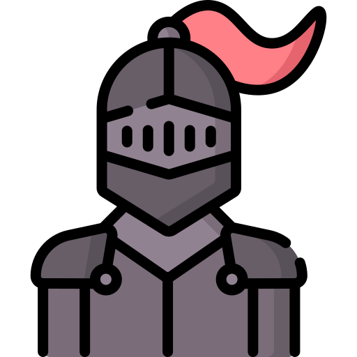
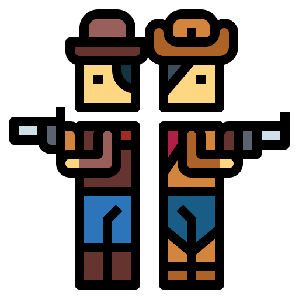

| Titulo | Compañía | Nota | Icono descriptivo | Enlace a wikipedia o página oficial |
|---|---|---|---|---|
| Elden Ring | From software | 11/10 |  | Descripción del juego |
| Sekiro | From software | 10/10 |  |
Descripción del juego |
| The Legend of Zelda: Breath of the Wild | Nintendo | 12/10 |  |
Descripción del juego |
| The witcher | CD Projekt RED | 9/10 |  |
Descripción del juego |
| Red Dead Redemption 2 | Rockstar Games | 11/10 |  | Descripción del juego |